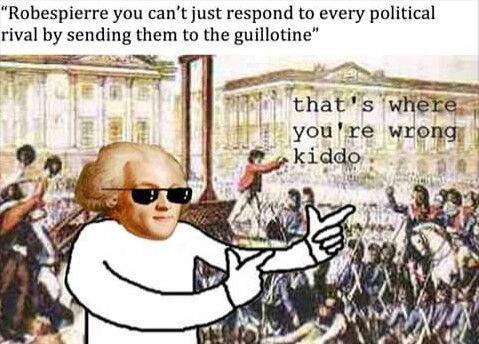

January 21, 1793: Execution of Louis XVI Louis was executed by guillotine (a device used for beheading), marking the end of the monarchy.
September 5, 1793 - July 28, 1794: Reign of Terror Led by Robespierre and the Committee of Public Safety, thousands were executed for perceived disloyalty to the revolution.
July 27-28, 1794: Fall of Robespierre Robespierre (leader of the Jacobin Club - The Jacobins advocated for the principles of liberty, equality, and fraternity, and they were committed to a democratic republic. They opposed monarchy and sought to implement radical reforms, including the redistribution of land and wealth.) was arrested and executed, leading to the end of the Reign of Terror.